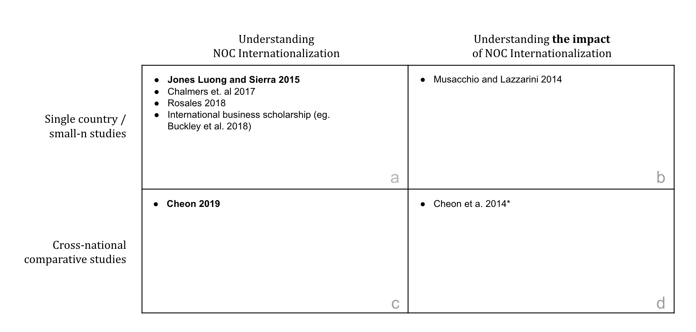

This section has three primary objectives. First, it provides a brief introduction to national oil companies (NOCs) and situates them within existing political economy and business studies research, touching on general approaches but focusing in particular on the studies that aim to improve our understanding of internationalization in particular. In this discussion, our aim is to clearly establish the importance of NOC internationalization as an area of study for political economists. Second, as part of this literature review, we aim to establish the state of empirical research into the NOC internationalization as transparently as possible, establishing the need for and value of the novel data this paper introduces in the subsequent section. Third, this section introduces a number of open empirical questions concerning NOC internationalization that have to this point not been adequately addressed. These questions form the basis for the analysis developed in Section 1.4.
National Oil Companies (NOCs) are firms that operate in the hydrocarbon sector and are wholly or partially owned by the state.3 The cut-point for minority state ownership is 30% state ownership (such as Italy’s ENI). Most NOCs are 100% state-owned. NOCs are a specific kind of state-owned enterprise (SOE). NOCs are geographically dispersed, though they are more dominant in some regions than in others. There are 88 NOCs currently in operation.
NOCs are generally primarily responsible for the stewardship and development of domestic oil and gas reserves. Out of the top 10 countries raked by proven crude oil reserves, Canada is the only state without an NOC.4 U.S. Energy Information Administration, 2017 Statistics. Canada established a wholly owned oil & gas crown corporation, Petro Canada, in 1975, and initiated privatization in 1990. The government divested its remaining 19% stake in 2004, and Petro Canada is now owned by Suncor Energy. NOCs can take primary responsibility for resource extraction (drilling, etc.) though some also contract these activities out to third parties (other large oil & gas firms). Many NOCs also operate at other points in the hydrocarbon value chain, including refining, transportation (shipping and pipelines), and even consumer sales (Mexico’s PEMEX, for instance, has a national chain of vehicle gas stations). NOCs are not restricted to operating in the oil & gas sectors, either: some own subsidiaries or investment arms that operate in very different commercial sectors such as electricity grid management, or real estate. NOCs can be the most significant contributor to the economy and the largest employer, as in the case of Saudi Arabia’s Saudi Aramco; others feature regularly in state-to-state diplomatic exchanges, as in the case of Russia’s Gazprom. Others invest heavily in brand placement, such as Malaysia’s Petronas and its Formula One sponsorship.
Just as NOCs vary in terms of their operations and corporate focus, they vary with respect to the practicalities of state-ownership as well. Many operate under the purview of a Ministry of Energy, where ultimate authority for the firm’s operations rests on an elected (or appointed) government minister. Others slot into a bureaucratic function and are insulated from elected decision-makers. Still others see their boards and leadership positions staffed by close associates or family members of a ruling clan, or serve as patronage opportunities for loyalists. States may have an interest in actively managing the affairs of the firm, or may prefer to let the firm work at arms-length from political functions so that it can operate as a purely economic actor.
Academic research into NOCs can be roughly grouped into four categories. First, scholarship across several disciplines has sought to address the question of why NOCs exist in the first place. The earliest of these focus on the historical genesis of NOCs as oil supply managers and evolution into production and export businesses. Many focus on explaining why states rely on state-owned firms instead of a competitive market for production and distribution (eg. Tordo 2011Tordo, Silvana. 2011. “National Oil Companies and Value Creation, V.1.” World Bank Working Paper, World Bank Working Papers, 218 (July). http://elibrary.worldbank.org/doi/book/10.1596/978-0-8213-8831-0.). Recent scholarship in this vein focuses on the nationalization process that generated many NOCs (Mahdavi 2014Mahdavi, Paasha. 2014. “Why Do Leaders Nationalize the Oil Industry? The Politics of Resource Expropriation.” Energy Policy 75 (December): 228–43. https://doi.org/10.1016/j.enpol.2014.09.023.). Many of these studies focus on a particular region and draw comparisons across a limited set of NOCs (eg. Marcel and Mitchell 2006Marcel, Valérie, and John V. Mitchell. 2006. Oil Titans: National Oil Companies in the Middle East. London: Brookings Institution Press.).
Second, a body research — developed in particular, but not exclusively, by applied economists — has investigated the economic activity of NOCs. Many of these studies examine and compare the efficiency and effectiveness of NOCs as economic entities, particularly in relation to non-state owned peers (eg. Hartley and Medlock III 2008Hartley, Peter, and Kenneth B. Medlock III. 2008. “A Model of the Operation and Development of a National Oil Company.” Energy Economics 30 (5): 2459–85. http://www.sciencedirect.com/science/article/pii/S0140988308000212.; Eller, Hartley, and Medlock III 2011Eller, Stacy L., Peter R. Hartley, and Kenneth B. Medlock III. 2011. “Empirical Evidence on the Operational Efficiency of National Oil Companies.” Empirical Economics 40 (3): 623–43. http://link.springer.com/article/10.1007/s00181-010-0349-8.; Thurber, Hults, and Heller 2011Thurber, Mark C., David R. Hults, and Patrick RP Heller. 2011. “Exporting the ‘Norwegian Model’: The Effect of Administrative Design on Oil Sector Performance.” Energy Policy 39 (9): 5366–78. http://www.sciencedirect.com/science/article/pii/S0301421511004125.; Nolan and Thurber 2012Nolan, Peter A., and Mark C. Thurber. 2012. “On the State’s Choice of Oil Company: Risk Management and the Frontier of the Petroleum Industry.” In Oil and Governance: State-Owned Enterprises and the World Energy Supply, edited by David G. Victor, David R. Hults, and Mark C. Thurber, 121–70. Cambridge, UK: Cambridge University Press. http://books.google.ca/books?hl=en&lr=&id=pBuV5z_hnngC&oi=fnd&pg=PR5&dq=Oil+and+governance:+state-owned+enterprises+and+the+world+energy+supply&ots=I_gTiZv4wM&sig=HGYZv7fPFHPpdXOQOFeMUmYgivE.). A useful review of both of these first literatures, focusing on historical genesis and economic efficiency, can be found in Victor (2013Victor, David G. 2013. “National Oil Companies and the Future of the Oil Industry.” Annual Review of Resource Economics 5 (1): 445–62. https://doi.org/10.1146/annurev-resource-091912-151856.).
Hydrocarbons are a foundational component to modern political science5 Foundational, in that canonical texts in international political economy in particular were developed to explain, in large part, political phenomena in energy policy and energy security. See Krasner (1978Krasner, Stephen D. 1978. Defending the National Interest: Raw Materials Investments and U.S. Foreign Policy. Princeton, N.J: Princeton University Press.), Keohane (1984Keohane, Robert O. 1984. After Hegemony: Cooperation and Discord in the World Political Economy. Princeton, N.J.: Princeton University Press. http://books.google.com/books?hl=en&lr=&id=HnvpdocqT9EC&oi=fnd&pg=PP1&dq=After+Hegemony&ots=vpoFXqp1wm&sig=wZgbQ2KDGWQbsC0zvlj15cXQ8eY#v=onepage&q=After%20Hegemony&f=false.), Ikenberry (1986Ikenberry, G. John. 1986. “The Irony of State Strength: Comparative Responses to the Oil Shocks in the 1970s.” International Organization 40 (1): 105–37. http://journals.cambridge.org/production/action/cjoGetFulltext?fulltextid=3216088.), and Ikenberry (1988Ikenberry, G. 1988. Reasons of State: Oil Politics and the Capacities of American Government. Ithaca: Cornell University Press.)., but political scientists have devoted limited attention to NOCs in particular. This lack of attention is surprising, given that NOCs are one of the most important institutions at the intersection of hydrocarbon wealth and the state. Some exceptions exist. Jones Luong and Sierra (2015Jones Luong, Pauline, and Jazmín Sierra. 2015. “The Domestic Political Conditions for International Economic Expansion Lessons from Latin American National Oil Companies.” Comparative Political Studies 48 (14): 2010–43. https://doi.org/10.1177/0010414015592647.) argue that ownership institutions — NOCs most prominent among them — are essential to understanding the causal process that connects hydrocarbon endowments with outcomes like economic and political development6 See Losman (2010Losman, Donald L. 2010. “The Rentier State and National Oil Companies: An Economic and Political Perspective.” The Middle East Journal 64 (3): 427–45. http://muse.jhu.edu/journals/mej/summary/v064/64.3.losman.html.) for another example, focused on the Middle East. Cheon, Lackner, and Urpelainen (2014Cheon, Andrew, Maureen Lackner, and Johannes Urpelainen. 2014. “Instruments of Political Control National Oil Companies, Oil Prices, and Petroleum Subsidies.” Comparative Political Studies, August. https://doi.org/10.1177/0010414014543440.) examine some of the ways that states can use their NOCs strategically for domestic ends, in particular by insulating domestic consumer markets from adverse trends in oil prices. Strategic concerns and political economy also feature prominently in some of the core omnibus analyses of NOCs (eg. Victor, Hults, and Thurber 2012Victor, David G., David R. Hults, and Mark C. Thurber, eds. 2012. Oil and Governance: State-Owned Enterprises and the World Energy Supply. Cambridge, UK: Cambridge University Press. http://books.google.ca/books?hl=en&lr=&id=pBuV5z_hnngC&oi=fnd&pg=PR5&dq=Oil+and+governance:+state-owned+enterprises+and+the+world+energy+supply&ots=I_gTiZv4wM&sig=HGYZv7fPFHPpdXOQOFeMUmYgivE.; Marcel and Mitchell 2006Marcel, Valérie, and John V. Mitchell. 2006. Oil Titans: National Oil Companies in the Middle East. London: Brookings Institution Press.). Overall, however, research into NOCs continues to be marginal in political science and political economy.7 A recent Annual Review of Political Science survey on “The Politics of Energy”, tellingly, makes no explicit references to NOCs, despite a few citations pointed towards research that focus exclusively on NOCs (Hughes and Lipscy 2013Hughes, Llewelyn, and Phillip Y. Lipscy. 2013. “The Politics of Energy.” Annual Review of Political Science 16 (1): 449–69. https://doi.org/10.1146/annurev-polisci-072211-143240.).
This relative lack of attention extends to international relations and international political economy. While NOC internationalization has drawn some interest from the popular press,8 eg. A special issue on the topic in The Economist in 2012 (The Economist 2012The Economist. 2012. “New Masters of the Universe,” January 21, 2012. http://www.economist.com/node/21542925.). See also (The Economist 2014The Economist. 2014. “Leviathan as Capitalist,” June 21, 2014. http://www.economist.com/news/business/21604553-state-capitalism-continues-defy-expectations-its-demise-leviathan-capitalist.). relatively few political economists have addressed the phenomenon of NOCs expanding into international markets. The bulk of academic work in this area has been pursued by business studies scholars. This research addresses a number of key questions related to NOC internationalization. Many of these studies leverage detailed Chinese firm-level outbound foreign direct investment (FDI) data to test their hypotheses. Cui and Jiang (2012Cui, Lin, and Fuming Jiang. 2012. “State Ownership Effect on Firms’ FDI Ownership Decisions Under Institutional Pressure: A Study of Chinese Outward-Investing Firms.” Journal of International Business Studies 43 (3): 264–84. https://doi.org/10.1057/jibs.2012.1.) find that state ownership modifies how Chinese firms engage in FDI, in particular by increasing the degree to which these firms conform to target market institutional pressures9 Meyer et al. (2014Meyer, Klaus E., Yuan Ding, Jing Li, and Hua Zhang. 2014. “Overcoming Distrust: How State-Owned Enterprises Adapt Their Foreign Entries to Institutional Pressures Abroad.” Journal of International Business Studies 45 (8): 1005–28. http://www.palgrave-journals.com/jibs/journal/vaop/ncurrent/abs/jibs201415a.html.) find supporting evidence for this argument.. Liang, Ren, and Sun (2014Liang, Hao, Bing Ren, and Sunny Li Sun. 2014. “An Anatomy of State Control in the Globalization of State-Owned Enterprises.” Journal of International Business Studies, July. https://doi.org/10.1057/jibs.2014.35.) unpack state control, finding evidence that formal and informal mechanisms of control and influence have varying effects on Chinese state-owned outward FDI. Duanmu (2014Duanmu, Jing-Lin. 2014. “State-Owned MNCs and Host Country Expropriation Risk: The Role of Home State Soft Power and Economic Gunboat Diplomacy.” Journal of International Business Studies 45 (8): 1044–60. https://doi.org/10.1057/jibs.2014.16.) find that state-ownership may help investing firms counter the risk of expropriation through the political influence of their state owner. Pan et al. (2014Pan, Yigang, Lefa Teng, Atipol Bhanich Supapol, Xiongwen Lu, Dan Huang, and Zhennan Wang. 2014. “Firms’ FDI Ownership: The Influence of Government Ownership and Legislative Connections.” Journal of International Business Studies 45 (8): 1029–43. https://doi.org/10.1057/jibs.2014.27.) find that state ownership moderates investing firms’ preference for high ownership states in favorable target markets: firms that have higher levels of state ownership (exercised through both formal and informal channels) demonstrate weaker preferences for high ownership in favorable markets (and for low ownership in less favorable markets)10 A complementary analysis can be found in Ramasamy, Yeung, and Laforet (2012Ramasamy, Bala, Matthew Yeung, and Sylvie Laforet. 2012. “China’s Outward Foreign Direct Investment: Location Choice and Firm Ownership.” Journal of World Business, Focus on China Special Section, 47 (1): 17–25. https://doi.org/10.1016/j.jwb.2010.10.016.). Li et al. (2017Li, Jing, Klaus E Meyer, Hua Zhang, and Yuan Ding. 2017. “Diplomatic and Corporate Networks: Bridges to Foreign Locations.” Journal of International Business Studies, September. https://doi.org/10.1057/s41267-017-0098-4.) examine the value of diplomatic channels in establishing international business relationships: state-owned firms with stronger ties to their home state leverage diplomatic relationships more extensively when establishing a foreign subsidiary, and will use these relationships to inform the choice of target market. Many of these research strands are usefully summarized in Buckley et al. (2018Buckley, Peter J., L. Jeremy Clegg, Hinrich Voss, Adam R. Cross, Xin Liu, and Ping Zheng. 2018. “A Retrospective and Agenda for Future Research on Chinese Outward Foreign Direct Investment.” Journal of International Business Studies 49 (1): 4–23. https://doi.org/10.1057/s41267-017-0129-1.).
Beyond the Chinese context, Bass and Chakrabarty (2014Bass, A. Erin, and Subrata Chakrabarty. 2014. “Resource Security: Competition for Global Resources, Strategic Intent, and Governments as Owners.” Journal of International Business Studies 45 (8): 961–79. https://doi.org/10.1057/jibs.2014.28.) find that state-owned enterprises (SOEs) focus their international investments on (and pay more for) exploration, arguing that this is primarily motivated by resource scarcity and security concerns on the home (investing) state’s side of the investment. Choudhury and Khanna (2014Choudhury, Prithwiraj, and Tarun Khanna. 2014. “Toward Resource Independence - Why State-Owned Entities Become Multinationals: An Empirical Study of India’s Public R&D Laboratories.” Journal of International Business Studies 45 (8): 943–60. https://doi.org/10.1057/jibs.2014.20.) modify this standard resource dependence theory in a novel way, utilizing Indian firm-level data to find evidence that SOEs engage in internationalization to improve their strategic position and independence from other state institutions (ministries, agencies, etc.).
Li, Cui, and Lu (2014Li, Ming Hua, Lin Cui, and Jiangyong Lu. 2014. “Varieties in State Capitalism: Outward FDI Strategies of Central and Local State-Owned Enterprises from Emerging Economy Countries.” Journal of International Business Studies 45 (8): 980–1004. https://doi.org/10.1057/jibs.2014.14.) develop (but do not empirically evaluate) an extensive set of theories focused on explaining the link between institutional variation (“varieties of state capitalism”) and outward international investment: their core contribution is in creating a typology of SOE organizational variation. Mohr, Wang, and Fastoso (2016Mohr, Alexander, Chengang Wang, and Fernando Fastoso. 2016. “The Contingent Effect of State Participation on the Dissolution of International Joint Ventures: A Resource Dependence Approach.” Journal of International Business Studies 47 (4): 408–26. https://doi.org/10.1057/jibs.2016.14.) find that resource dependence isn’t just a reason for state-owned firms’ outward investment: international joint ventures with a state-owned party reduces the risk of joint venture dissolution as well. Musacchio and Lazzarini (2014Musacchio, Aldo, and Sérgio G. Lazzarini. 2014. Reinventing State Capitalism Leviathan in Business, Brazil and Beyond. Cambridge, Mass: Harvard University Press. http://proxy.library.georgetown.edu/login?url=http://www.degruyter.com/isbn/9780674419582.) focus on Brazil to produce one of the most extensive and interesting recent treatments of contemporary state capitalism.
Several recent studies extend this line of inquiry into political science properly speaking. Jones Luong and Sierra (2015Jones Luong, Pauline, and Jazmín Sierra. 2015. “The Domestic Political Conditions for International Economic Expansion Lessons from Latin American National Oil Companies.” Comparative Political Studies 48 (14): 2010–43. https://doi.org/10.1177/0010414015592647.) focus on variation in Latin American NOCs to argue that patterns of internationalization can be explained by the interaction of two variables: the nationalization process that formed the firm in the first place, and the historical convergence of state and firm interests regarding internationalization. Meckling, Kong, and Madan (2015Meckling, Jonas, Bo Kong, and Tanvi Madan. 2015. “Oil and State Capitalism: Government-Firm Coopetition in China and India.” Review of International Political Economy 22 (6): 1159–87. https://doi.org/10.1080/09692290.2015.1089303.) utilize Indian (and Chinese) data to argue that NOC internationalization is impacted by the balance of cooperation and conflict that exists between the state and the firm in question. Chalmers and Mocker (2017Chalmers, Adam William, and Susanna Theresia Mocker. 2017. “The End of Exceptionalism? Explaining Chinese National Oil Companies’ Overseas Investments.” Review of International Political Economy 24 (1): 119–43. https://doi.org/10.1080/09692290.2016.1275743.) contest the basic view that SOEs are more risk-acceptant in their choice of investment target: they find that risk acceptance varies depending on whether the firm or the state primarily owns that risk. Finally, Cheon (2019Cheon, Andrew. 2019. “Developing Global Champions: Why National Oil Companies Expand Abroad.” Economics & Politics 0 (0). https://doi.org/10.1111/ecpo.12133.) leverages a cross-national dataset of NOC mergers & acquisitions transactions to argue that domestic politics explain NOC internationalization: greater levels of partisan competition domestically reduce state tolerance for investment risk, and by extension appetite for expansion. We discuss the empirical basis for each of these studies in more detail in Section 1.3. The objective of Chapter ?? is to directly engage with the theoretical arguments contained in this literature.
We can draw at least three conclusions from this survey.
First, there is no good reason for the neglect of National Oil Companies in political science research. They sit in a key place, substantively and theoretically, for some of the most important topics in the field (the resource curse, energy security). As institutions, they marry political and economic influences and processes in a variety of organizational forms, and continue to be the most salient and influential evidence of robust state capitalism in the contemporary economy. When we consider their international expansion in particular, as an set of activity it is substantial enough to have made a major impact on the global market for oil & gas, and instances of NOC investment regularly receive intense scrutiny from the popular press and from political actors themselves. Scholars in adjacent disciplines have built a robust literature explaining NOC internationalization with reference to a set of explicitly political variables of interest.
Second, our empirical understanding of NOCs, and NOC internationalization in particular, can and should be improved. The bulk of existing research, regardless of discipline is built on single-country analyses or small-n case comparisons. As such, the generalizability of many of the arguments and theories this research puts forward has yet to be meaningfully evaluated. This empirical weakness, driven primarily by the lack of high quality cross-national data on the subject, is likely a contributor to the fact that political economists have yet to devote serious attention to NOC internationalization (with a few exceptions).
Third, the NOC internationalization research agenda can and should be broadened beyond explaining that internationalization. Detailed investigations in to the causes for internationalization have come at the cost of at least two complementary focuses: on internationalization itself, and efforts to better understand its features and how it varies; and on the political and economic consequences of that internationalization for the firm, the state-owner, and the target market. The remainder of this chapter is devoted to the first of these topics. Chapters 2 and 3 address the second.
The figure below schematically captures these conclusions in the context of the survey. The Y axis varies in terms of the research approach taken (single country or small n). The X axis varies in terms of the research focus (Explaining NOC Internationalization) vs Explaining the Impact of NOC Internationalization):
Figure 1.1: A typology of the current research on NOC internationalization
In subsequent sections I introduce and then explore a new dataset, one that leverages corporate hierarchy data captured in financial databases to develop a rigorous view into the structure of the international hydrocarbon market, including but not limited to NOCs. I then utilize this dataset to investigate a set of questions that build our foundational knowledge of NOC internationalization. As such, the goal of this paper is to contribute to the lower left quadrant in the schematic above (c). Subsequent chapters in this research project contribute to both the upper and lower right of the schematic above (b and d).